Quality-Diversity Algorithms: MAP-Polar
A new approach based on MAP-Elites applied to Robot Navigation
Evolutionary Algorithms have taken an important place in many application fields, including robotics. In this article, we will, first, present the navigation problem in robotics. After that, we will show why it’s better to look for diversity than for quality and experiment with some well-known methods to do this kind of thing. Finally, we will present a new intuition for associating quality with diversity to outperform both quality and diversity-oriented algorithms.
Navigation Task
In robotics, it is common that agents are roughly represented as several sensors that collect sensory information about the environment and several actors that can take values in a discrete or continuous range.
In this blog post, we are interested in the task of navigation. This task consists of an agent with proximity sensors to move in an environment to reach a goal.
Our experiment sensors are range finders and radars arranged around the agent, as presented in this illustration taken from [3].
The actor is the motor that can give an impulse in the forward or reverse direction and an impulse to the left or the right, both represented by velocities taking their values in the real interval [-2,2].
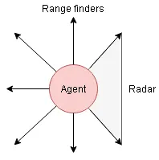
The environment is a maze with a single goal that the agent has to reach by minimising distance travelled and collisions.
In their article, Lehman and Staley[3] used two mazes, one they referred to as “medium,” but it was more a “standard” maze. The second they considered as “hard” because of the deceptive behaviour that results from following the distance to the goal.
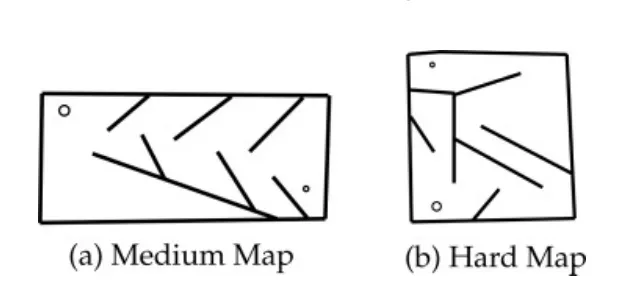
The main statement that Lehman and Staley[3] claim in their article is that in the second configuration, the exploration is more efficient if it doesn't rely only on each solution's quality, which is the distance to the goal in this case but also on the diversity in the population.
Since in the following, we will explore the different state-of-the-art methods to combine quality and diversity in an evolutionary approach, it’s more convenient to assess their performance on the hard map.
Technical Point
In the following, we will explain the framework we will use to build the neural network controllers, and, after that, we will explain the evolutionary algorithm's simulation process to evaluate each neural network's behaviour.
Neural Network Design
Each neural network we could think of to deal with this navigation task has in common the number of inputs and the number of fixed outputs according to the number of sensors and the number of robot actors.
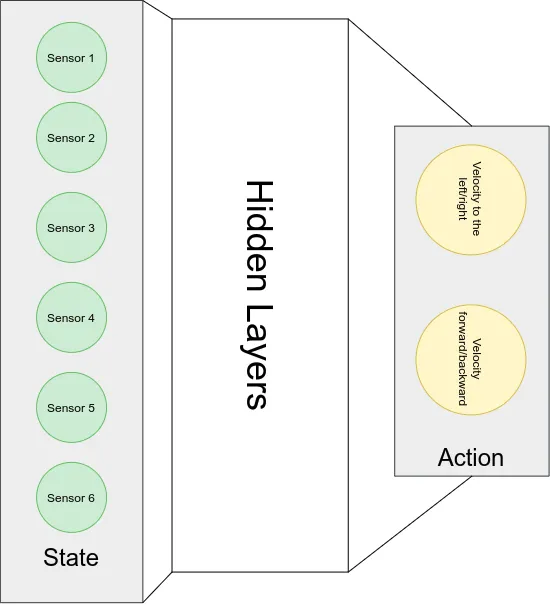
In the context of an evolutionary algorithm, we have to distinguish between two notions: the genotype and the phenotype of an individual (in this case of a neural network)
- Genotype: In this case, the genotype is the vector of weights that defines the way the neural network will generate outputs from the inputs it gets from the sensors; more generally, the genotype refers to the hidden configuration of the agent.
- Phenotype: This term refers to the agent's actual observable behaviour by opposition to the genotype, which encodes hidden characteristics. In our case, the phenotype is the trajectory the agent takes in the maze when using the neural network parametrised with the genotype's weights.
Our design framework has to consider and allow access to a compact representation of the neural network's genotype. To do this, we will use the PyTorch framework and create a base class for all our neural networks; each neural network we will design after that will extend this class to inherits genotype manipulation methods.
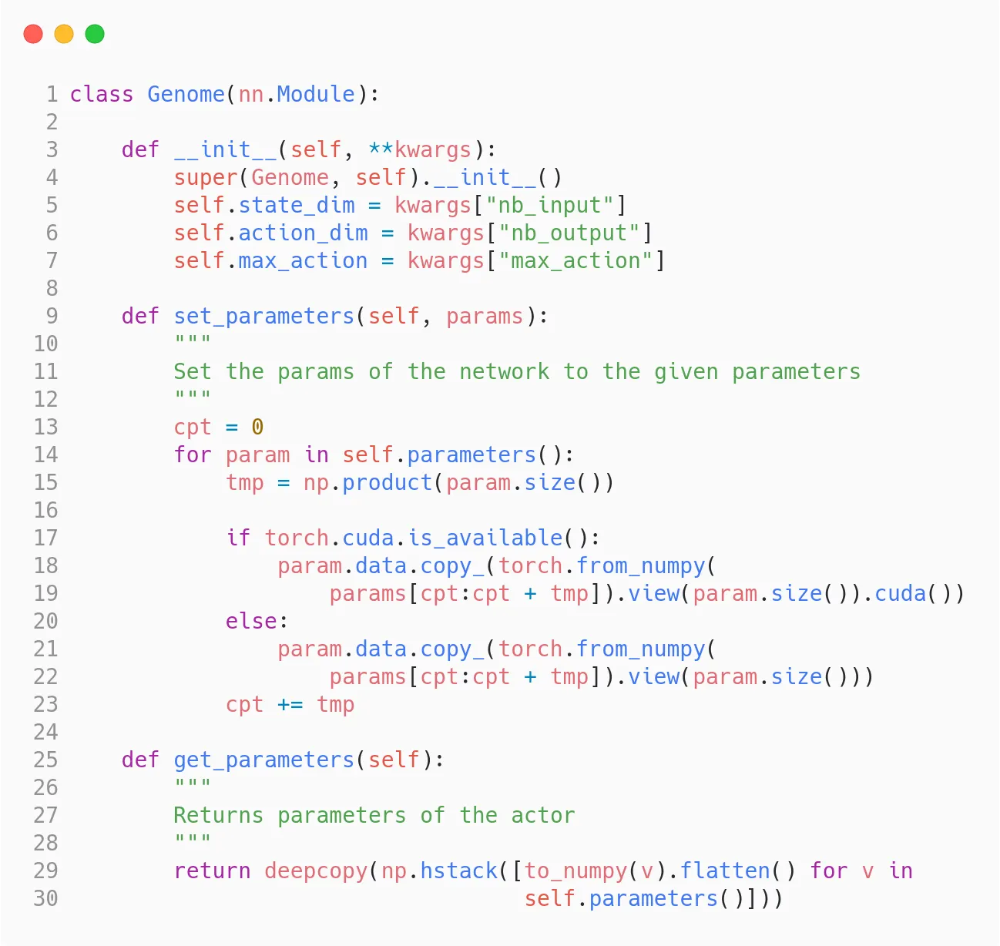
For example, the most straightforward architecture we can think of is a multilayer neural network with a tanh activation function scaled by two to fit our action’s domain; we extend the base class to inherits all the functionalities that manipulate the genotype of the neural network.
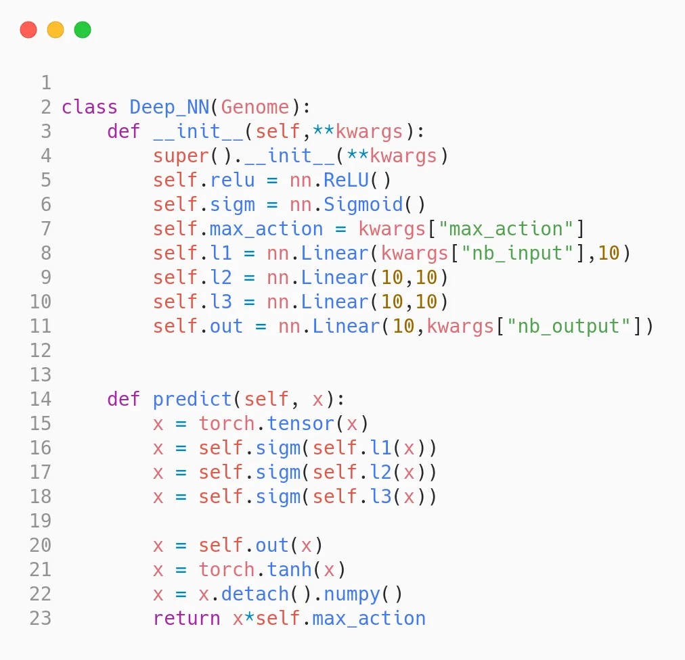
Simulation of the experience
Now that we have a way to build a neural network from its genotype, we have to simulate the neural network's behaviour in the maze to evaluate this behaviour (also called phenotype in this context).
To manage the simulations, we will use fastsim, which can be found here: https://github.com/jbmouret/libfastsim and a gym binding https://github.com/alexendy/fastsim_gym.
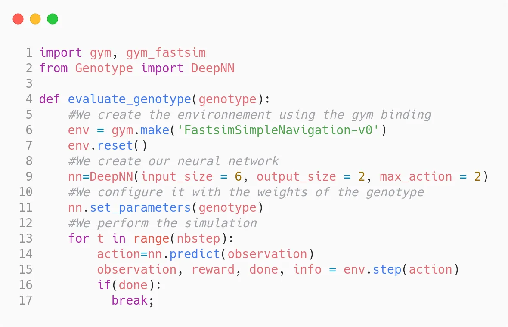
In the observation returned, we can get the number of collisions and the position. Both can be valid descriptors for the phenotype of each individual.
Overview of the state of art algorithms
Now we will review and experiment with some stat of the art algorithms for this task,
Novelty Search:
The novelty search is one of the most known diversity-based algorithms. Lehman and Stahley introduced it in [3], and it uses an estimation of each individual's novelty as a fitness function.
The novelty is defined independently from the context of the task as follows:
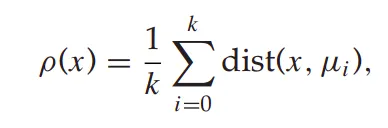
Roughly it’s the mean of the distance of an individual's phenotype to the k nearest phenotypes. It will promote the genotypes that result in behaviour conduct in new positions.
As explained by Lehman and Stahly, using this objective function in the hard maze results in divergent research.
This plot represents the last positions of the generated individuals of 200 generations.
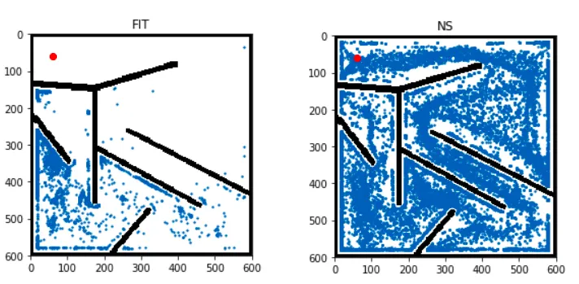
MAP-Elites Search:
In this algorithm introduced by JB Mouret and Jeff Clune[2], in our adaptation of it, we will divide the maze into grid cells and map each individual to the cell corresponding to its final position in the maze.
After that, we will keep for each cell the “best” individual, which means in our case the individual that can reach this cell with the minimum number of collisions, and in the selection phase, we will select individuals from the grid archive to ensure that we have selected individuals that can reach different cells of the grid.
We can now compare the individuals in the fit-oriented and the MAP-Elites approach as in the precedent part.
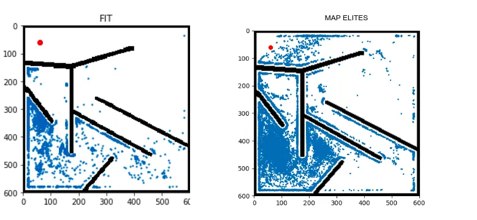
And as we can see, the MAP-Elite selection is somehow objective-oriented. Still, the selection process, which relies on selecting one individual per grid cell, allows the algorithm to get out of the impasse and add selection pressure on diversity.
Spatial, Hierarchical, Illuminated Neuro-Evolution (SHINE) :
This approach was introduced by Davy Smith, Laurissa Tokarchuk and Geraint Wiggins [1] and combine elements from Novelty Search and MAP-Elites,
It maintains an archive of the individuals by mapping their final positions in the maze. Instead of using a grid, it uses a hierarchical mapping based on a tree construction; a hyper-parameter “alpha” limits the tree height.
Each tree leaf is filtered using a novelty-based criterion to keep the best “beta” individuals.
This approach outperforms both Novelty Search and MAP-Elites by far, as we can see in this visualisation.
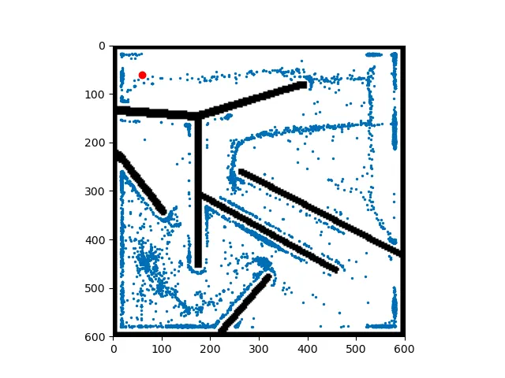
This visualisation lacks points because the algorithm reaches the exit in a minimal number of generations than the others, but we will get back to this point later.
Hyper-parameters influence
As you may have noticed, all the precedent algorithms rely on hyper-parameters to regulate their way of saving and/or selecting individuals from a generation to another.
Novelty Search
The novelty search is the more “hyper-parameter free” approach; it only depends on k, the number of neighbours to consider when computing the novelty score, and this hyper-parameter, except for the extreme values, don't really affect the performances.
MAP-Elites
The MAP-Elites algorithm, since using a fitness-based approach to filter the best individuals in each grid cell, is affected by the number of cells or equivalently by each cell's size.
The influence of the number of cells can be observed when taking extreme values. For instance, suppose we want to select ten individuals, if we have 1000 cells, the algorithm will choose the ten best cells that can be very near to each other because of the tiny size cell, and in contrast, if we take only 20 cells on the whole map, the selection will have to cover at least 50% of the total area of the maze so it will be more scattered.
As a result, the algorithm may not get out of the impasse when taking a small grid size.
SHINE
Finally, SHINE algorithms rely on two hyper-parameters: the max number of individuals in each leaf and the tree's max height. Even though it complexifies the tunning process because that raises combination issues, these two parameters affect the algorithm more vaguely, so it’s more difficult to tune them.
The archive building starts as in the MAP-Elits algorithms but with only four cells. Each time a new individual is generated, it’s mapped to a cell, if a cell has more than alpha element, it’s split to 4 cells, and a new level in the tree is created, if the algorithm cannot create a new level because the tree reached its maximum height, we remove from the leaf the worst individual according to a novelty search criterion.
As we can see, the depth of a leaf indicates how small the individual's grid is; this aim to grant that a very frequented area is cut more finely.
Quality-Diversity tradeoff
In our study, we will use two metrics to track the progression of an evolutionary algorithm.
- We can measure the mean fitness of the population since the algorithm aims to optimise the fitness. It’s generally a good metric to track.
- Since the algorithms aim to create one controller, we can be interested in the best fitness found so far to see how quick it takes to find a controller that reaches the maze's exit.
Regarding these two metrics, let’s analyse the precedent algorithm’s performances.
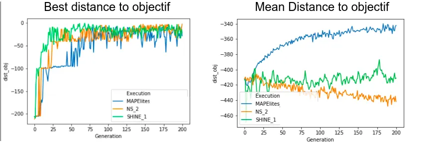
As we can see, the SHINE algorithm and Novelty search both outperform MAP-Elites because of the deceptive nature of the fitness objective used in the cells of MAP-Elites. We also note that SHINE converges more quickly because it cut more precisely the maze's most visited areas.
However, as a side effect of the fitness objective used in MAP-Elites, we notice that the individual’s mean quality keeps increasing. In contrast, the other algorithm’s quality stagnates because of the novelty objective.
My Approach: MAP-Polar
This last part will explain the intuition I considered when designing my approach and the result I obtained.
A synthesis of what can be kept from what has been presented above
As I said before, all the precedents approach's principal drawbacks are their dependence on hyper-parameters. Yet, these parameters allow them to calibrate their quality-diversity tradeoff.
Moreover, we saw that the SHINE algorithm outperforms the others for many reasons; one of the main reasons is that it constructs custom-sized grid cells.
The general principle of my approach
In my approach, I try to emancipate my archive from any hyper-parameter while maintaining the custom-sized grid cells archive.
To do this, I first noticed that seeking novelty is useful when we are far from the goal. It becomes less and less useful when we start getting closer, so the first modification I made compared to MAP-Elites is that I used polar coordinate to describe the final positions instead of cartesian positions. I took the goal as the origin.
After that, to adapt SHINE’s idea, I scaled the grid size to an exponential scale to have big cells when far from the goal and small cells when we get closer to it.
Experimental results
Let’s so how this new version of MAP-Elits behave compared to Novelty Search and to SHINE.
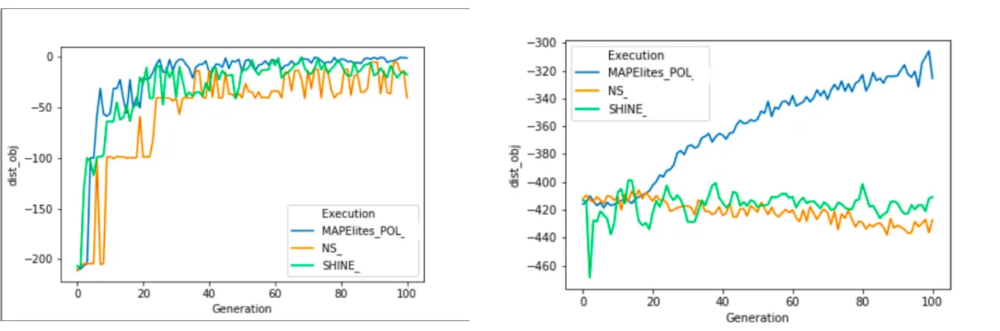
As we can see, we reach the target at a comparable speed. Still, we kept the side effect of the MAP-Elites algorithm that causes the global amelioration of the population's quality.
And, one more thing, we did it without any hyper-parameter tunning.
Bibliographic References
[1] Smith, D., Tokarchuk, L., and Wiggins, G. 2016. Rapid Phenotypic Landscape Exploration Through Hierarchical Spatial Partitioning.
[2] Jean-Baptiste Mouret, and Jeff Clune. (2015). Illuminating search spaces by mapping elites.
[3] Lehman, J., and Stanley, K. 2011. Abandoning Objectives: Evolution Through the Search for Novelty Alone. Evolutionary Computation, 19, p.189–223.
A special thanks to Cassy Deplace which helped me in this project.
Project supervised by : Pr. Stéphane Doncieux